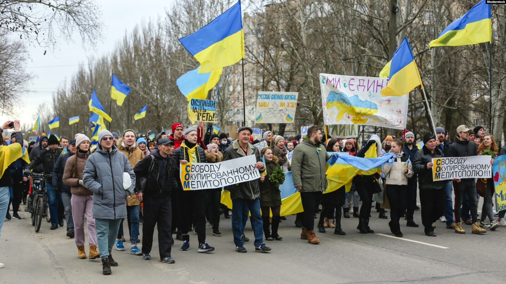

Меліто́поль (від грец. Μελιτοπόλη — «медове місто») — місто в Україні, адміністративний центр Мелітопольського району Запорізької області, розташований на річці Молочній, біля Молочного лиману, що прилягає до Азовського моря. Населення — майже 150 тис. мешканців.
У місті розташована залізнична станція Мелітополь — транзитний пункт дорогою до Криму. Поблизу міста розташована природна пам'ятка «Кам'яна Могила»
Унаслідок російського вторгнення в Україну, місто перебуває під тимчасовою окупацією з боку Російської Федерації з 26 лютого 2022 року
Місто Мелітополь — великий та багатогалузевий промисловий центр, розташований на правому березі річки Молочної. Загальна площа зелених насаджень 2,2 тис. га.
Близько 70 % території міста розташоване на вододілі з середніми висотами 34—40 м, решта — на крутому схилі долини річки Молочна. У 1920-30 роках обговорювалася та досліджувалася можливість створення у Мелітополі морського порту. Територія міста та району розташована в основному в межах Причорноморської низовини. Її поверхня — плоска низовинна рівнина, знижуються з півночі на південь, де вона крутим (висотою до 20 м) приступом обривається на березі Азовського моря. На північному сході в межі краю заходять відроги Приазовської височини з позначками абсолютних висот від 150 до 250 і більше метрів над рівнем моря.. На території міста є дві чималі балки — Кизиярська та Піщанська.
За 10 км на північ від Мелітополя розташований державний історико-археологічний музей-заповідник «Кам'яна Могила». На території району Юрівка був розташований Мелітопольський курган.
У 2021 році в дуже короткі строки був розроблений проєкт благоустрою щодо встановлення нових меж міста Мелітополь. Цим документом передбачено, що площа міста збільшиться майже на 1 793 га і складе 6 039 гектарів. Останній раз межі Мелітополя затверджувалися у 1965 році. На той час площа міста Мелітополь становила 4 966 гектарів. Без будь-яких поважних причин у 1990-х роках площа міста Мелітополь була змінена та зменшена на 729 гектарів і ці розбіжності тривалий час були причиною певних проблем у розв'язанні земельних питань. Розширення меж міста планується за рахунок земель суміжних територіальних громад Мелітопольського району: це Семенівська громада — 742 гектари, Новинська громада — 315 гектарів, Констянтинівська громада — 8 гектарів і збільшення на 729 гектарів за рахунок усунення розбіжностей між затвердженими межами міста у 1965 році та даними Державної статистичної звітності.
На околицях міста височить чимало курганів. У так званому Мелітопольському кургані виявлено 2 скіфські поховання (IV ст. до н. е.). У них, окрім речей побуту (11 амфор), знайдено понад 3,5 тис. прикрас із золота, у тому числі золоту оббивку сагайдака із зображенням сцен із давньогрецької міфології. У Кизиярській балці виявлено сармато-аланське поховання (IV ст. до н. е.), де знайдено залізні вудила, бронзове дзеркало та інкрустовану коштовним камінням золоту діадему.
Про місцевість, де розташоване сучасне місто, є відомості в «Книге Большому Чертежу» (1627 рік). У ній згадується, що тут від Муравського шляху, який проходив уздовж правого берега річки Молочної, біля броду відгалужувався Ізюмський шлях. Під час російсько-турецької війни 1735—1739 рр. поблизу цієї переправи (Овечий брід) загін запорізьких козаків курінного отамана Микити Мойсеєва розбив Калмицький улус.
Перші згадки про місто припадають на 1769 рік, коли тут споруджено редут, у якому служили запорозькі козаки. У середині 1780-х років поблизу Овечого броду почали селитися сім'ї козаків, що перебували в караулі, вільнонаймані, які обслуговували військовий поштовий пост, відставні солдати і переселенці, що прямували до Криму в пошуках кращої долі. Ногайське поселення поблизу Овечого броду мало назву Кизияр (іноді кажуть про Кизил-Яр — від тюркської قیزل يار — кир. Къизил Яр — «червоний берег»)
1816 року в Кизиярі проживало близько 200 осіб. Цього ж року його перейменували на Новоолександрівку (Новоолександрівську слободу).
Далі населення зростало переважно за рахунок нових переселенців. Так, 1838 року лише державних селян, переселених із різних губерній України і Росії, було 2130 чоловік.
Зрештою Новоолександрівку вирішили зробити центром Мелітопольського повіту Таврійської губернії. Тому 7 січня 1842 року надали поселенню статус міста і нову назву — Мелітополь (із давньогрецької (ἡ) Μελιτόπολις, себто «Медове місто», з τὸ μέλιτος (то ме́літос) — «мед», і ἡ πόλις (ге по́ліс) — «місто»). Це був один з небагатьох випадків, коли місто назвали на честь повіту (створеного під такою назвою ще 1784 року), а не навпаки.
Напередодні реформи 1861 року Мелітополь був типовим провінційним містечком. Населення його становило 5,3 тис. осіб, у тому числі 43 особи належало до дворянського стану, 25 — до духовного, 1346 — купецького; 1008 було міщан, 2474 — державних селян і понад 200 — військовослужбовців. Три п'ятих жителів міста займалися сільським господарством. У місті не було брукованих вулиць. Базарний майдан потопав у багнюці. Тут діяли 67 крамниць, багато товарних складів, 9 винних льохів, горілчані лавки, кав'ярні, харчевні тощо
Впродовж 1870—1880 років у Мелітополі почало розгортатися виробництво сільськогосподарських машин, розвивалася борошномельна та харчова промисловість. На початку 1880-х років брати Классени відкрили невеличкий завод, який випускав жниварки, віялки, букери. Заснований тоді ж завод Голубчина виробляв обладнання для млинів, лагодив парові двигуни тощо. Став до ладу паровий млин братів Классенів та Нейфельда. Наприкінці XIX ст. у місті налічувалося близько 30 невеличких промислових підприємств. Проте Мелітополь розвивався переважно як торгове місто. Цьому сприяло прокладення у 1870-х роках Лозово-Севастопольської залізниці. Найбільшого значення набула торгівля хлібом, шкірою, вовною та іншими продуктами сільського господарства. У Мелітополі укладалися також торговельні угоди про експорт великих партій пшениці; діяли міський громадський банк, товариство взаємного кредиту, відділення Азово-Донського комерційного банку, торговельне кредитно-ощадне товариство, державна скарбниця, багато складів гуртової торгівлі.
Наприкінці XIX століття в Мелітополі налічувалося понад 16 тис. жителів, у тому числі 410 дворян, 42 особи духовного стану, 368 купців, 8037 міщан, 2763 військовослужбовців і 4136 селян. До міщан належали й робітники.
Під час Голодомору 1932—1933 років померло щонайменше 3473 жителі міста.
6 жовтня 1941 року внаслідок швидкого німецького наступу радянські війська покинули Мелітополь. Радянська влада повернула контроль над містом 23 жовтня 1943 року.
24 лютого 2022 року, внаслідок російського вторгнення 2022 року Мелітопольська авіабаза зазнала ракетного удару, а потім була атакована російськими окупаційними військами. Того ж дня президент Володимир Зеленський заявив, що «ворог намагається просунутися у напрямку Мелітополя».
26 лютого 2022 року увійшли війська РФ у Мелітополь і повністю окупували 1 березня 2022 року.
За словами президента України Володимира Зеленського, 11 березня російські окупанти викрали міського голову Мелітополя Івана Федорова та катували його. Наступного дня депутат міської ради Галина Данильченко проголосила себе виконавицею обов'язків міського голови і заявила, що «у місті створюється комітет народних обранців, який і керуватиме Мелітополем».
13 березня 2022 року Мелітопольська міська рада провела позачергову сесію, де звернулися до генерального прокурора України із закликом розпочати досудове розслідування про державну зраду щодо створення окупаційної адміністрації представниками партії «Опозиційний блок».
22 квітня 2022 року українські джерела повідомили про те, що місцеві партизани ліквідували понад 100 російських окупантів.
У квітні 2022 року військові та представники окупаційної адміністрації держави-агресора викрали історико-культурні цінності з Мелітопольського краєзнавчого музею. Серед вкраденого майна була колекція скіфського золота, що виявлена археологами у 1950-х роках.
З початку війни у місті та його околицях діє партизанський рух, який був сформований з місцевого населення. Партизани займаються підривом логістики, знищують коллаборантів і російських офіцерів. Активно співпрацюють з українською розвідкою.